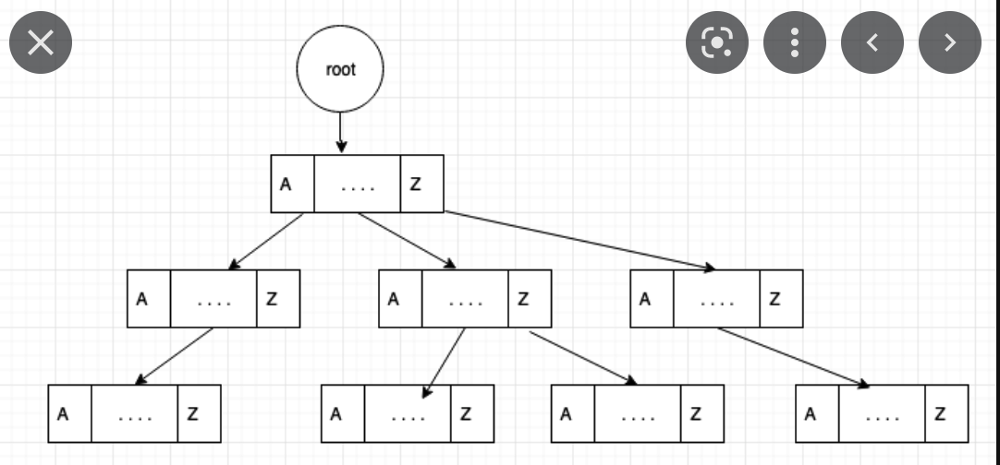

What is Trie?

Trie Node
class Node {
// If your charset contains just lower OR upper case chars, you can replace the map with array of 26 chars;
private HashMap children;
private boolean isWord;
public Node() {
this.isWord = false;
this.children = new HashMap<>();
}
public HashMap getChildren() {
return children;
}
public void setChildren(HashMap children) {
this.children = children;
}
public boolean isWord() {
return isWord;
}
public void setWord(boolean isWord) {
this.isWord = isWord;
}
}
Trie VS Hash table
Trie Implementation
public class Trie {
private Node root;
public Trie() {
root = new Node();
}
// Start with root node, current = root;
// For each character in the given word,
// if current node maps a node for the current character, then simply advance to that node;
// else create a new node, add it to children, set it's character equal to current character, and advance to new node;
// Mark the current node as a node that completes the word;
// Time Complexity: O(N), where N represents the word size;
public void insert(String word) {
Node current = root;
for (char ch : word.toCharArray()) {
current = current.getChildren().computeIfAbsent(ch, c -> new Node());
}
current.setWord(true);
}
// Start with root node, current = root;
// For each character in the given word,
// if current node maps a node for the current character, then simply advance to that node;
// else stop the search and return false;
// If the current node is word, return true; else, return false;
// Time Complexity: O(N), where N represents the word size;
public boolean contains(String word) {
Node current = root;
for (char ch : word.toCharArray()) {
current = current.getChildren().get(ch);
if (current == null) {
return false;
}
}
return current.isWord();
}
// Case 1: If the word to deleted is not in the trie, nothing to do;
// Case 2: If the word to deleted has no common subsequence with other words, then all delete all nodes of that word;
// Case 3: If the word to deleted is a prefix of another longer word, then set leaf node flag to false;
// Case 4: If the word to deleted and another word has a common prefix, then that node is deleted along with all the
// higher-up nodes until you find a node that has any children OR a node whose isEndWord is false;
public boolean delete(String word) {
return deleteHelper(word, root, 0);
}
private boolean deleteHelper(String word, Node currentNode, int index) {
//Base Case: If we have reached at the node which points to the alphabet at the end of the key.
if (index == word.length()) {
// If the given word is not in the trie, nothing to do;
if (!currentNode.isWord()) {
return false;
}
// If the given word is in the trie, mark it as deleted!
currentNode.setWord(false);
// If this node doesn't have any children, we can delete this node in the path;
return currentNode.getChildren().isEmpty();
}
char ch = word.charAt(index);
Node childNode = currentNode.getChildren().get(ch);
if (childNode == null) {
return false; // If the given word is not in the trie, nothing to do;
}
boolean childDeleted = deleteHelper(word, childNode, index + 1);
if (childDeleted && !childNode.isWord()) {
currentNode.getChildren().remove(ch);
return currentNode.getChildren().isEmpty();
}
return false;
}
public List suggest(String prefix) {
List list = new ArrayList<>();
Node current = root;
StringBuffer curr = new StringBuffer();
for (char c : prefix.toCharArray()) {
current = current.getChildren().get(c);
if (current == null)
return list;
curr.append(c);
}
suggestHelper(current, list, new String(curr));
return list;
}
private void suggestHelper(Node root, List list, String curr) {
if (root.isWord()) {
list.add(curr.toString());
}
if (root.getChildren() == null || root.getChildren().isEmpty())
return;
root.getChildren().forEach((ch, node) -> {
String newCurr = curr + Character.toString(ch);
suggestHelper(node, list, newCurr);
});
}
}
public class TrieApp {
public static void main(String[] args) {
Trie t1 = new Trie();
t1.insert("the");
t1.insert("a");
t1.insert("there");
t1.insert("answer");
t1.insert("any");
t1.insert("by");
t1.insert("bye");
t1.insert("their");
if (t1.contains("the"))
System.out.println("the is present!");
else
System.out.println("the is not present!");
if (t1.contains("these"))
System.out.println("these is present!");
else
System.out.println("these is not present!");
if (t1.contains("their"))
System.out.println("their is present!");
else
System.out.println("their is not present!");
if (t1.contains("thaw"))
System.out.println("thaw is present!");
else
System.out.println("thaw is not present!");
t1.delete("their");
System.out.println("Deleting the word!");
if (t1.contains("their"))
System.out.println("the is present!");
else
System.out.println("the is not present!");
}
}